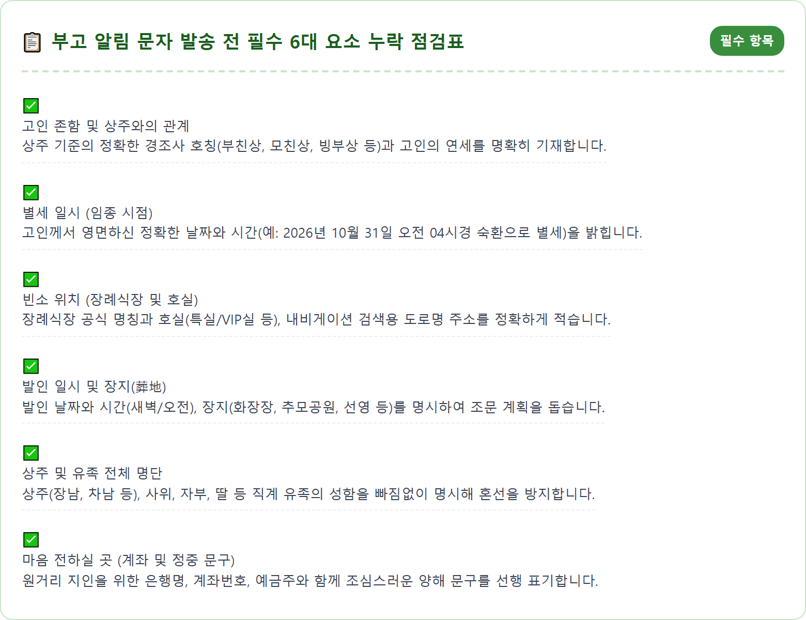
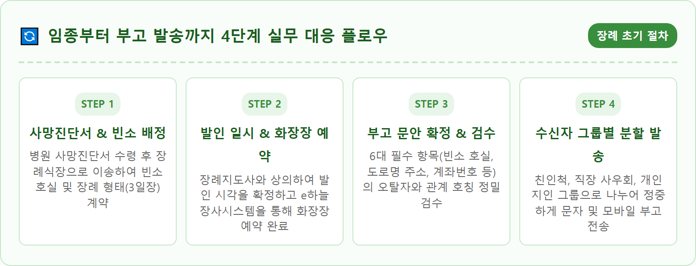
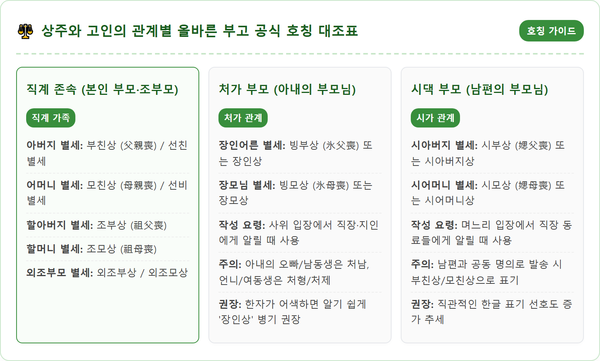
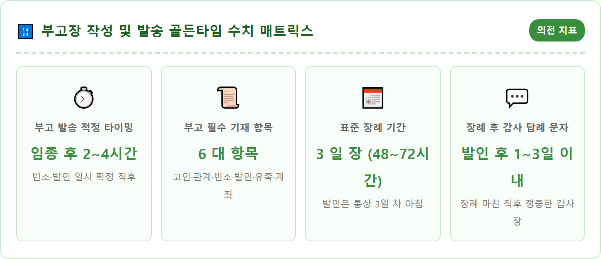
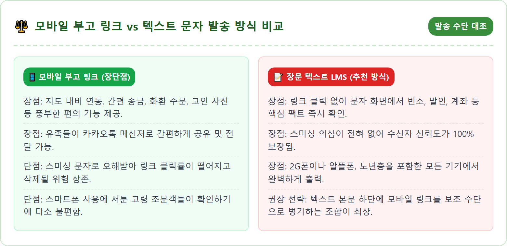
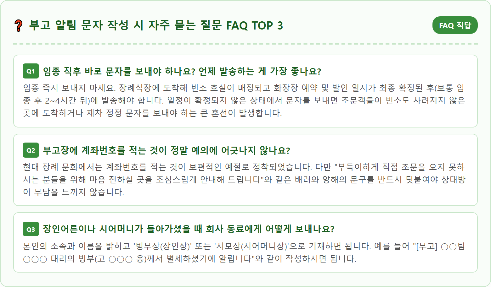

A respectful and solemn composition showing a modern smartphone displaying a neatly formatted formal Korean obituary message (bugo) lying on a dark, elegant wooden table next to a pure white chrysanthemum flower and a traditional black-edged white condolences envelope. Soft, gentle indoor lighting creates a deeply reverent, quiet, and peaceful atmosphere. Clean and minimalist funeral etiquette concept with thoughtful attention to cultural Korean traditions. Ultra-realistic photography, 8k resolution, crisp details, beautiful shallow depth of field, warm respectful tones.

사랑하는 부모님이나 가족과의 예기치 못한 영원한 이별은 그 누구에게나 감당하기 힘든 커다란 슬픔과 당혹감을 안겨줍니다. 하지만 황망한 슬픔 속에서도 상주와 유족은 고인의 마지막 길을 외롭지 않고 품격 있게 모시기 위해 현실적이고 신속한 행정 및 의전 절차를 진행해야 합니다. 그중에서도 고인의 별세 소식을 친인척과 지인들에게 공식적으로 알리는 '부고 알림 문자(訃告)'는 장례식의 첫 단추를 꿰는 가장 중요한 과업입니다.
부고장은 단순한 비보의 전달을 넘어, 고인을 추모하고자 하는 조문객들이 일정과 동선을 계획하고 예의를 갖출 수 있도록 돕는 실질적인 안내장입니다. 만약 경황이 없다는 이유로 빈소 주소나 호실, 발인 일시를 누락하거나 오기입하게 되면, 조문객들이 헛걸음을 하거나 장례식장에서 큰 혼선이 빚어질 수 있습니다.
과거에는 신문 부고란이나 종이 부고장을 돌렸지만, 오늘날에는 모바일 문자메시지(SMS/LMS)와 카카오톡 메시지가 가장 보편적인 수단으로 자리 잡았습니다. 따라서 슬픔 중에도 마음을 가다듬고 필수 항목이 정갈하게 담긴 표준 부고 문안을 작성해 두어야 신속하고 정확하게 지인들에게 부고를 전할 수 있습니다.
부고 문자를 작성할 때 문장이 너무 길거나 불필요한 미사여구가 많으면 정작 중요한 핵심 정보가 한눈에 들어오지 않습니다. 조문객의 입장에서 가장 신속하게 파악해야 하는 정보는 정확히 6가지입니다.
첫째, **'고인의 성함과 상주와의 관계'**입니다. 받는 사람이 상주의 친구나 직장 동료인 경우가 많으므로 "○○○의 부친 고 ○○○ 옹께서"와 같이 누구의 부모님인지, 또는 배우자인지를 첫머리에 명확하게 밝혀야 합니다. 둘째, **'별세 일시'**입니다. 영면하신 날짜와 대략적인 시간(오전/오후)을 기재합니다. 셋째, **'빈소 정보'**입니다. 장례식장의 정확한 명칭은 물론, 층수와 호실 번호(예: 서울아산병원 장례식장 2층 23호), 그리고 내비게이션이나 택시 이용을 위한 도로명 상세 주소를 반드시 포함해야 합니다.
넷째, **'발인 일시 및 장지'**입니다. 발인 날짜와 정확한 시간(예: 11월 2일 오전 7시 30분), 그리고 고인이 최종적으로 안치될 장지(예: 서울시립승화원 및 분당메모리얼파크)를 기재합니다. 다섯째, **'유족(상주) 명단'**입니다. 상주(장남, 자녀), 며느리, 사위, 손자 등의 관계와 이름을 명시하여 조문객이 방명록을 쓰거나 조의금을 전달할 때 대상을 명확히 알 수 있게 합니다. 여섯째, **'마음 전하실 곳(계좌번호)'**입니다. 거리나 개인 사정으로 직접 조문하지 못하는 분들을 배려하여 은행명, 계좌번호, 예금주를 조심스러운 문구와 함께 덧붙입니다.

부고 문자를 작성할 때 가장 많은 실수가 나오는 부분이 바로 상주와 고인의 관계를 나타내는 전통 경조사 한자 호칭입니다. 평소 자주 쓰지 않는 단어이다 보니 잘못된 단어를 기재하여 결례를 범하는 경우가 적지 않습니다. 상황에 맞는 올바른 호칭을 명확히 알아두어야 합니다.
가장 흔한 부친상과 모친상의 경우 남의 부친을 높여 부를 때는 '춘부장(春府丈)', 모친은 '자당(慈堂)'이라 칭하지만, 상주 본인이 부고장을 보낼 때는 겸양의 의미를 담아 **'부친상(父親喪)'**, **'모친상(母親喪)'**으로 명기하는 것이 표준입니다. 돌아가신 아버지를 지칭할 때는 '선친(先親)' 또는 '선고(先考)', 어머니는 '선비(先妣)'라는 표현을 쓰기도 합니다.
배우자의 부모님이 돌아가셨을 때의 호칭도 주의해야 합니다. 아내의 아버지가 돌아가신 경우는 **'빙부상(氷父喪)'** 또는 **'장인상'**이라 부르며, 아내의 어머니가 돌아가신 경우는 **'빙모상(氷母喪)'** 또는 **'장모상'**이라 부릅니다. 남편의 부모님이 돌아가셨을 때는 **'시아버지상'**, **'시어머니상'**(한자로는 시부상, 시모상)으로 알기 쉽게 표기하는 것이 요즘의 추세입니다. 할아버지나 할머니의 경우에는 **'조부상(祖父喪)'**, **'조모상(祖母喪)'**으로 표기합니다. 굳이 어려운 한자어를 고집하기보다는 지인들이 직관적으로 이해할 수 있는 순우리말 병기(예: 장인상, 시모상)를 사용하는 것도 매우 좋습니다.

경황이 없는 상황에서 바로 활용할 수 있도록, 가장 널리 쓰이는 상황별 부고 문자 표준 양식 5가지를 정리했습니다. 각 괄호 안의 정보를 실제 상황에 맞게 수정하여 사용하시면 됩니다.
부고 문자를 보낼 때 상주들이 가장 고민하고 망설이는 부분이 바로 '계좌번호(부의금 송금처)'를 넣을 것인가 말 것인가의 문제입니다. 부고장에 대놓고 계좌번호만 덜렁 적어놓으면 마치 조의금을 독촉하는 것처럼 비쳐 상대방에게 거부감이나 불쾌감을 줄 수 있기 때문입니다.
하지만 오늘날에는 지방이나 해외에 거주하거나, 바쁜 생업과 건강상의 이유로 직접 장례식장을 찾지 못하는 지인들이 훨씬 많습니다. 이들에게 조의를 표할 수 있는 통로를 열어주는 것 역시 상주의 배려에 해당합니다. 실제로 많은 조문객들이 "부고장에 계좌가 적혀 있지 않아 따로 상주에게 계좌를 묻는 것이 오히려 상중에 결례가 될까 봐 망설여졌다"고 토로합니다.
따라서 계좌번호를 기재할 때는 반드시 **정중한 양해와 조심스러운 심정을 담은 수식 문구**를 함께 적어야 합니다. 예를 들어, **"부득이한 사정으로 직접 찾아뵙지 못하는 분들을 위해 조심스럽게 마음 전하실 곳을 남깁니다"**, 혹은 **"먼 곳에서 따뜻한 마음으로 위로를 전하고자 하시는 분들을 위해 안내해 드립니다"**와 같은 배려 깊은 문장을 계좌번호 상단에 덧붙여야 합니다. 또한 불필요하게 여러 자녀의 계좌를 나열하지 말고, 대표 상주(장남 등) 1명의 계좌로 단일화하는 것이 훨씬 정갈하고 예의 바르게 보입니다.

최근 상조회사나 장례식장에서 제공하는 '모바일 부고장 웹 링크' 서비스가 널리 보급되었습니다. 모바일 부고장은 고인의 영정 사진과 함께 장례식장 지도(네이버 지도·카카오맵 연동), 내비게이션 바로가기, 조의금 송금(카카오페이 연동), 화환 주문 기능까지 한 화면에 깔끔하게 제공하므로 시각적으로 매우 편리합니다.
하지만 최근 부고 문자를 사칭한 악성 스미싱(Smishing) 금융 사기 범죄가 기승을 부리면서, 출처가 불분명한 웹 링크(URL)가 포함된 문자를 클릭하기를 극도로 꺼리는 사회적 분위기가 팽배해 있습니다. 특히 어르신들이나 직장 동료들은 부고 문자에 링크만 덩그러니 들어있을 경우 해킹이나 스미싱으로 오인하여 아예 열어보지 않고 삭제하는 경우가 허다합니다.
따라서 가장 안전하고 신뢰받는 부고 발송 방식은 **'장문 텍스트(LMS)와 모바일 링크의 병행'**입니다. 문자의 본문에 고인 성함, 빈소, 발인 일시 등 6대 핵심 정보를 텍스트로 전부 기재한 후, 하단에 "※ 내비게이션 및 상세 약도는 모바일 부고장을 확인해 주세요 (스미싱 문자가 아니오니 안심하시기 바랍니다)"라는 안내 문구와 함께 링크를 첨부하는 것입니다. 이렇게 하면 수신자가 굳이 링크를 누르지 않고 문자 본문만 읽어도 조문 정보를 완벽하게 파악할 수 있어 의심과 불편을 완전히 해소할 수 있습니다.

부고 문자를 보낼 때 휴대전화 주소록 전체에 무차별적으로 단체 문자를 발송하는 것은 피해야 합니다. 수신자와의 친분 관계와 상황에 따라 문자의 어조와 담아야 할 정보가 달라져야 하기 때문입니다.
주소록을 크게 **'친인척 그룹'**, **'직장 및 업무 거래처 그룹'**, **'동창 및 개인 지인 그룹'** 세 가지로 나누어 발송하는 것이 좋습니다. 친인척 그룹에는 집안 어른들의 호칭과 상세한 장지 일정까지 담긴 정중한 전통 문안을 보내고, 직장 및 거래처에는 소속 부서와 직책이 명시된 격식 있는 공지형 문안을 보냅니다. 평소 연락이 뜸했던 지인이나 업무상 스쳐 지나간 인연에게까지 계좌번호가 포함된 부고장을 무차별 전송하는 것은 자칫 부담을 주는 결례가 될 수 있으므로 수신 명단을 한 번 더 정갈하게 선별해야 합니다.
발송 시간대 역시 각별한 주의가 필요합니다. 임종이 밤 11시 이후 늦은 밤이나 새벽에 발생한 경우, 직계 가족과 친척들에게는 즉시 유선으로 알리더라도, 일반 지인이나 직장 동료들에게는 수면을 방해하지 않도록 날이 밝는 **익일 오전 7시 30분에서 8시 이후**에 부고 문자를 발송하는 것이 품격 있는 예의입니다.

부고 문자를 성공적으로 발송했다면, 이제 빈소를 찾아올 조문객들을 맞이할 준비를 해야 합니다. 장례식장 입구의 전자 안내판에 고인과 상주의 이름이 올바르게 표출되는지 확인하고, 방명록과 조의금 접수대, 제단 꽃장식과 제사 준비를 점검합니다. 빈소에 조문객이 들어서면 정중하게 맞절을 올리고, 따뜻한 위로의 말씀에 깊은 감사를 표합니다.
장례식의 모든 절차(발인과 안치)가 무사히 끝났다면, 마지막으로 반드시 챙겨야 할 의전이 바로 **'장례 감사 답례 문자'**입니다. 바쁜 일상과 먼 길을 마다하지 않고 빈소를 찾아와 슬픔을 함께 나누어 준 조문객들과, 멀리서 마음을 담아 조의금을 보내준 분들에게 장례가 끝난 직후(발인 다음 날 또는 늦어도 3일 이내)에 정성스러운 감사의 뜻을 전해야 합니다.
"황망한 중에 따뜻한 위로와 격려를 보내주신 덕분에 어머님의 장례를 무사히 마칠 수 있었습니다. 일일이 찾아뵙고 인사드리지 못함을 널리 혜량하여 주시기 바라며, 귀댁에 늘 평안과 행복이 깃들기를 기원합니다"와 같이 진심 어린 답례 문자를 보내는 것은 상주로서 지녀야 할 마지막 품격이자 아름다운 도리입니다.
부고 알림 문자는 고인의 영원한 안식을 세상에 알리고, 남은 가족들이 마지막 효와 도리를 다하기 위한 성스러운 첫걸음입니다. 비통한 슬픔에 눈앞이 캄캄하더라도, 차분하게 호흡을 가다듬고 필수 항목을 점검하여 정갈한 부고장을 작성해야 합니다.
정확한 고인과의 관계 호칭, 빈소의 도로명 주소와 호실 번호, 발인 일시, 그리고 조심스럽고 정중한 계좌 안내 문구에 이르기까지 정성을 다해 다듬어진 부고 문자는 슬픔 속에서도 유족의 품격을 빛나게 해줍니다.
예기치 않게 상을 당해 경황이 없으실 전국의 모든 상주와 유족분들께 깊은 애도와 위로의 마음을 전합니다. 오늘 정리해 드린 표준 작성 원칙과 템플릿을 차분히 활용하셔서, 고인의 마지막 가시는 길을 존엄하고 따뜻한 추모의 물결로 배웅하시기를 바랍니다.